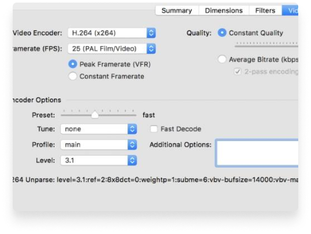

-
Convert video from nearly any format
-
Free and Open Source video converter
-
Multi-Platform desktop application
Just a few reason you
will love HandBrake


OPTIMISED FOR EASY USE
Built-in Device Presets
Get started with HandBrake in seconds by
choosing a profile optimised for your
device, or
choose a universal profile for
standard or high
quality conversions. Simple, easy, fast. For those
that want more choice,
tweak many basic and
advanced
options to improve your encodes.
Modern video formats
Supported Input Sources
Handbrake can process most common multimedia
files and any DVD or BluRay
sources that do not
contain any kind of copy
protection.
Outputs
 File Containers: .MP4(.M4V)
and .MKV
File Containers: .MP4(.M4V)
and .MKV
- Video Encoders: H.265 (x265
and QuickSync),
H.264(x264 and QuickSync), H.265 MPEG-4 and
MPEG-2, VP8, VP9 and Theora - Audio Encoders: AAC /
HE-AAC, MP3, Flac, AC3, or
Vorbis - Audio Pass-thru: AC-3,
E-AC3, DTS, DTS-HD, TrueHD,
AAC and MP3 tracks


WITH YOU IN MIND
Even more features for you
- Title / chapter and range
selection
- Batch Scan and Queueing of
encodes
- Live Static and Video
Preview
- Support for VFR and CFR
- Chapter Markers
- Subtitles (VobSub, Closed
Captions CEA-608,
SSA, SRT) - Constant Quality or Average
Bitrate Video
Encoding - Video Filters:
Deinterlacing, Decomb,
Denoise, Detelecine, Deblock, Grayscale,
Cropping and scaling